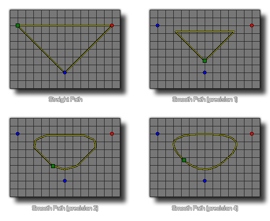

path_set_precision(index, prec);
| Argumento | Descripción |
|---|---|
| index | El índice de la ruta para cambiar. |
| prec | La precisión del camino Debe ser un número entero entre 1 y 8. |
Devoluciones: N / A
Con esta función puede cambiar la "suavidad" de una ruta. Este valor debe estar entre 1 y 8, con un valor bajo que crea bordes más rectos con curvas más nítidas entre los puntos, mientras que un valor más alto redondeará los puntos y hará que la ruta sea mucho más "curvilínea". Tenga en cuenta que esta función no tendrá ningún efecto visible si la ruta no se ha configurado para suavizar en el editor de ruta o usar la función path_set_kind. Esta función cambia el recurso de la ruta real, y por lo tanto afectará permanentemente la forma en que la ruta es utilizada por todas las instancias en el juego desde el momento en que se usa la función hasta el final del juego.

path_set_precision(path0, 2);
Esto establecerá la precisión de path0 en 2.